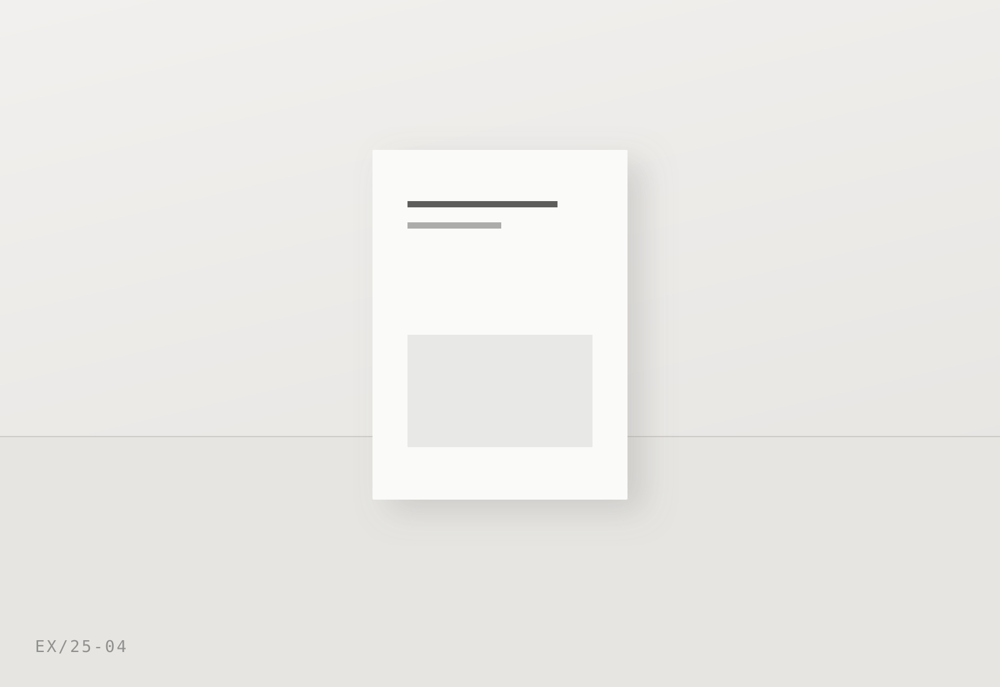

About — 회사소개
덜어내는 방식으로
일합니다
212디자인은 2016년 서울에서 시작한 시각 디자인 스튜디오입니다.

Studio
우리는 무엇을 더할지보다 무엇을 뺄 수 있는지를 먼저 묻습니다. 색을 하나 줄이고, 인쇄 도수를 하나 덜어내고, 화면에서 버튼 하나를 없애는 결정이 결과적으로 브랜드를 더 오래 쓰이게 한다고 믿습니다.
그래서 작업의 절반은 만드는 일이고, 나머지 절반은 정리하는 일입니다. 클라이언트가 가진 자료와 이야기를 모아 한 줄로 요약하는 데서 프로젝트를 시작합니다. 그 한 줄이 정해지면 로고도, 지면도, 화면도 자연스럽게 따라옵니다.
작은 스튜디오라 많은 일을 맡지는 않습니다. 대신 맡은 프로젝트는 기획 회의부터 인쇄 감리, 오픈 이후 점검까지 같은 사람이 끝까지 함께합니다.
How we work
STEP 01
듣기 · 정리
가진 자료를 전부 펼쳐 놓고 봅니다. 문제를 한 문장으로 좁히는 단계입니다.
STEP 02
방향 제안
두세 가지 방향을 실제 적용 예시와 함께 보여드립니다. 무드보드로 끝내지 않습니다.
STEP 03
설계 · 제작
규칙을 만들고 전체에 적용합니다. 인쇄물은 사양과 단가까지 함께 검토합니다.
STEP 04
전달 · 점검
가이드와 원본 파일을 정리해 넘기고, 실제 사용 후 한 차례 더 점검합니다.
Facts
2016
설립
5
구성원
120+
완료 프로젝트